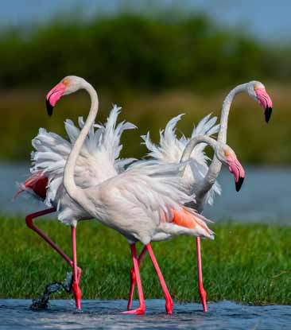
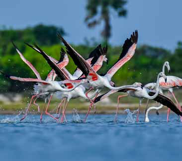
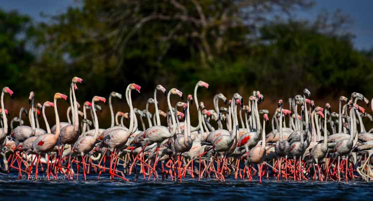
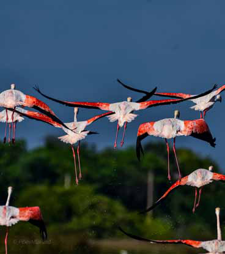
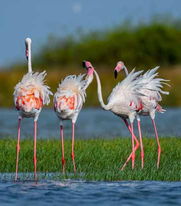
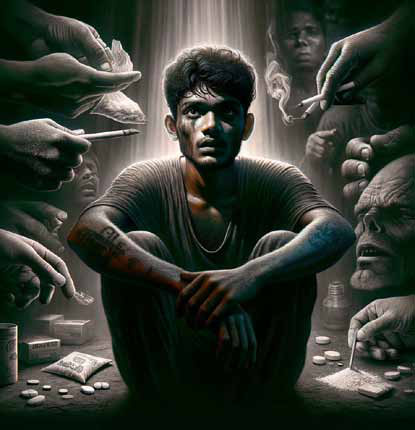
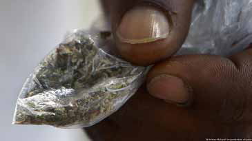

The Majestic Flamingos of Thatuvan Kotti: A Call to Action
The Majestic Flamingos of Thatuvan Kotti: A Call to Action
Jaffna Monitor hellojaffnamonitor@gmail.com 26 In Kilinochchi's war-affected yet naturally rich landscapes, a natural marvel unfolds each year that remains relatively hidden from the global eye. The region of Thatuvan Kotti, located at Elephant Pass in Northern Sri Lanka, becomes the stage for a breathtaking display of nature: the arrival of thousands of Greater Flamingos. This spectacle, captured through the lens of local wildlife enthusiasts like Dev Muhund, highlights an urgent need for wildlife conservation and sustainable tourism development in the region. The Majestic Flamingos of Thatuvan Kotti Each year, in a migration that spans hundreds of kilometres, flocks of Greater Flamingos paint the skies and waters of Thatuvan Kotti with vibrant hues of pink and orange. Originating mainly from India, these birds are drawn to the area's water bodies, enriched with prawns and algae post- monsoon. With their stately stance and striking colours, the sight of these elegant birds creates a natural spectacle like no other, transforming Thatuvan Kotti into a haven for bird watchers and nature lovers. A Natural Wonder Overlooked: Despite the grandeur of this annual event, Thatuvan Kotti's flamingo congregation has not received the attention it deserves, especially from the tourism and conservation sectors. The lack of awareness and infrastructure development has left this natural wonder largely uncelebrated and vulnerable. Challenges Facing the Flamingo Population: The flamingos, while a visual treat, face several threats in their temporary home. Illegal hunting, although prohibited, continues due to insufficient monitoring and enforcement. This practice not only endangers the flamingo population but also disrupts the ecological balance of the region. The Majestic Flamingos of Thatuvan Kotti: A Call to Action By: Our Environment Correspondent Photos by: Dev Mukund Environment


Jaffna Monitor hellojaffnamonitor@gmail.com 27 The Need for Sustainable Development: In contrast with other parts of Sri Lanka, where tourism is heavily promoted, Thatuvan Kotti's potential remains untapped. The absence of essential amenities such as hotels and proper transportation infrastructure limits the region's growth as an eco-tourism destination. This lack of development hinders economic opportunities for the local community and impedes efforts to protect and study these magnificent birds. A Call to Action: The Sri Lankan government and the Northern Tourism Board must recognize the ecological and economic value of Thatuvan Kotti's flamingo migration. Investing in sustainable tourism infrastructure, enhancing conservation efforts, and promoting global awareness could transform Thatuvan Kotti into a thriving eco-tourism hub. This development would not only provide economic benefits to the local population but also ensure the protection of the flamingos and their habitat.



Jaffna Monitor hellojaffnamonitor@gmail.com 28 In a recent shocking turn of events in Sri Lanka's Jaffna district, the arrest of a young man with close familial ties to a sitting Member of Parliament has cast a spotlight on a disturbing reality. This arrest, in- volving illegal narcotics worth a staggering 10 crores rupees, not only underscores a critical drug problem among the youth but also exposes a tangled web of influence and corruption weaving through the upper echelons of Jaffna society. Jaffna's Arrest Exposes a Troubling Connection Drugs, Money, Politics: BY: David Ignatius
Jaffna Monitor hellojaffnamonitor@gmail.com 29 A Tangle of Influence and Corruption Belonging to a family with significant clout, the arrested individual's connections to a prominent Jaffna MP paint a troubling pic- ture of the intertwining of illicit activities and political power. The family, clouded by vari- ous allegations, including past involvements in political turmoil, stands at the center of this scandal, epitomizing the complex inter- play of power and illegality that plagues the region. The Legal Maze At the heart of the legal battle is the classi- fication of the narcotics involved. Owing to legislative loopholes, this substance, "Kush," remains in a legal gray area, complicating the prosecution's efforts and potentially enabling the suspect to evade stringent penalties. The involvement of a high-powered legal team underscores the significant influence wielded by certain factions in Jaffna, challenging the very foundations of legal fairness. Media Under the Microscope The local media's subdued approach to this high-profile case raises critical questions about the independence of journalism in the region. The tempered coverage reflects the considerable sway of the implicated family and their political allies, hinting at a concern- ing level of control over public narratives and media freedom. Jaffna at a Crossroads This episode marks a pivotal moment for Jaffna. It reveals the disturbing extent to which influential families armed with political connections can manipulate societal dynamics and adversely affect the youth. The limited media coverage and the case's broader implications underscore an urgent need for decisive action from both governmental authorities and civil society groups. As Jaffna stands at this crucial juncture, the path forward must be paved with a resolute demand for transparency, ac- countability, and justice. It is only through a concerted effort and a steadfast commitment to these principles that Jaffna can begin to dismantle these deep-seated illegalities and chart a course towards a more just and equitable society.

